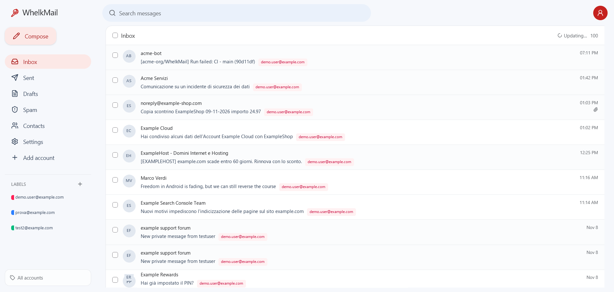
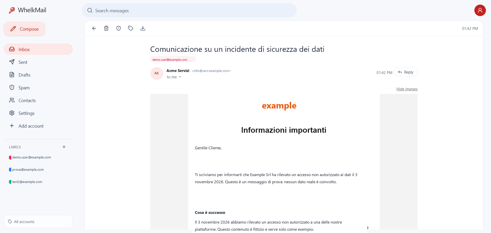
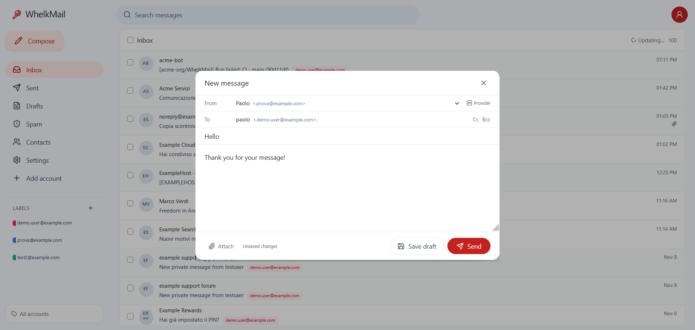
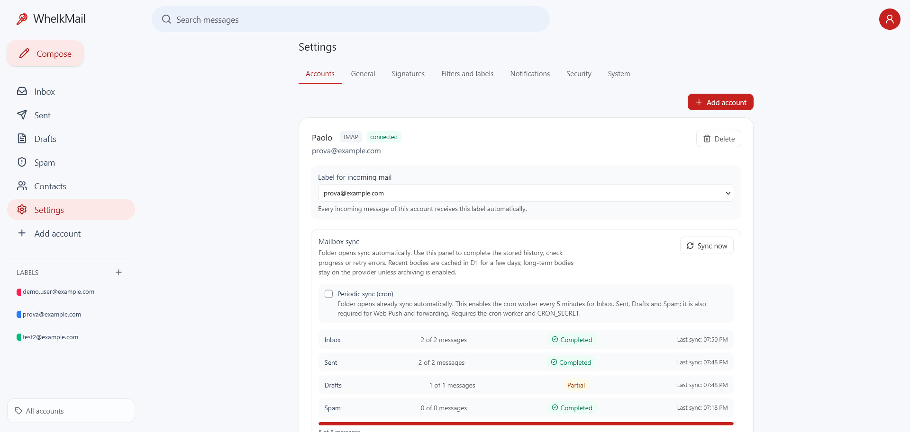
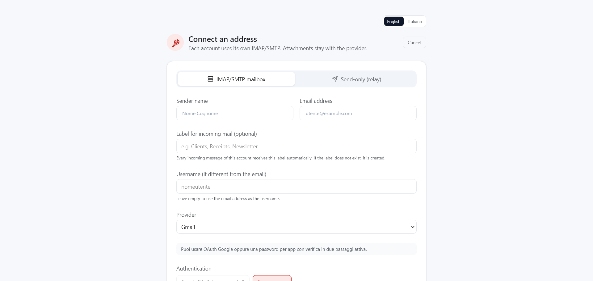

Every account, one view
Gmail, Outlook, iCloud, Fastmail, Yahoo and custom domains side by side, with colored account labels and a shared address book.
Self-hosted webmail · Cloudflare-native
WhelkMail turns the IMAP and SMTP accounts you already own into a fast, familiar inbox. No mail server to run, no third-party inbox in the middle, no lock-in.

Everything you need
Gmail-style organization on top of the accounts you already use, with the flexibility of a self-hosted tool.
Gmail, Outlook, iCloud, Fastmail, Yahoo and custom domains side by side, with colored account labels and a shared address book.
Create labels shared across accounts, apply them manually or automatically, and forward matching mail with the original EML attached.
Folder lists open from a local D1 mirror while a resumable background sync keeps metadata and read state current. The optional cron worker extends this to background notifications.
Recent bodies are cached briefly so opening a message does not wait for IMAP. Keep bodies on your provider or archive them to Cloudflare R2 or Google Drive.
HTML email is rendered in a sandboxed frame with scripts disabled. Remote images and tracking pixels stay blocked until you enable them for a message.
Select one or many messages to delete, move between Inbox, Spam and Trash, or mark as spam. A dedicated Spam folder is included.
Relay accounts for domains without SMTP, with SMTP2GO, Resend, Mailgun, Brevo, SendGrid, Mailjet, Postmark and Cloudflare Email Service support.
A shared address book with CSV import/export and autocomplete, plus one shared signature or a different signature per account.
A look inside
A familiar Gmail-style interface on top of the accounts you already own. Every screenshot below is a functional part of WhelkMail.




Privacy by default
WhelkMail reads from your provider. HTML is rendered in a sandboxed frame with scripts and forms disabled; remote images and tracking pixels stay blocked until you enable them for a message. A short-lived D1 cache keeps recent bodies for fast opens, and long-term archiving remains opt-in.
You keep using the providers you already trust. WhelkMail is the client.
No analytics, no third-party inbox, no data broker in the loop.
MIT licensed. Inspect it, fork it, self-host it on your own Cloudflare account.
Runs on Cloudflare
Pages Functions, D1 and cloudflare:sockets. No VPS, no containers,
no mail server to patch.
Add Gmail, Outlook, iCloud, Yahoo or any IMAP/SMTP account. Credentials stay encrypted in your own D1 database.
Use the template, create a D1 database, set your secrets and connect the Pages project. The guide walks you through it.
Folder opens already sync automatically. Deploy the cron worker for periodic sync, new-mail notifications, forwarding and provider cleanup.
git clone https://github.com/WhelkMail/WhelkMail.git
cd WhelkMail
npm install
cp wrangler.toml.example wrangler.toml
npm run db:localSee the Cloudflare deployment guide for bindings, secrets and OAuth setup.
Take your inbox back